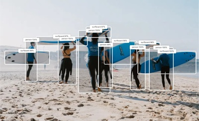

Quantized real‑time object detection optimized for mobile and edge. YoloNAS is a machine learning model that predicts bounding boxes and classes of objects in an image. This model is post‑training quantized to int8 using samples from the COCO dataset.

# YOLO-NAS License
These model weights or any components comprising the model and the associated documentation (the "Software") is licensed to you by Deci.AI, Inc. ("Deci") under the following terms:
© 2023 – Deci.AI, Inc.
Subject to your full compliance with all of the terms herein, Deci hereby grants you a non-exclusive, revocable, non-sublicensable, non-transferable worldwide and limited right and license to use the Software. If you are using the Deci platform for model optimization, your use of the Software is subject to the Terms of Use available here (the "Terms of Use").
You shall not, without Deci's prior written consent:
(i) resell, lease, sublicense or distribute the Software to any person;
(ii) use the Software to provide third parties with managed services or provide remote access to the Software to any person or compete with Deci in any way;
(iii) represent that you possess any proprietary interest in the Software;
(iv) directly or indirectly, take any action to contest Deci's intellectual property rights or infringe them in any way;
(V) reverse-engineer, decompile, disassemble, alter, enhance, improve, add to, delete from, or otherwise modify, or derive (or attempt to derive) the technology or source code underlying any part of the Software;
(vi) use the Software (or any part thereof) in any illegal, indecent, misleading, harmful, abusive, harassing and/or disparaging manner or for any such purposes. Except as provided under the terms of any separate agreement between you and Deci, including the Terms of Use to the extent applicable, you may not use the Software for any commercial use, including in connection with any models used in a production environment.
DECI PROVIDES THE SOFTWARE "AS IS" WITHOUT WARRANTY OF ANY KIND, EITHER EXPRESSED OR IMPLIED, INCLUDING, BUT NOT LIMITED TO, THE IMPLIED WARRANTIES OF MERCHANTABILITY AND FITNESS FOR A PARTICULAR PURPOSE OR NON-INFRINGEMENT. IN NO EVENT SHALL THE AUTHORS OR COPYRIGHT HOLDERS OF THE SOFTWARE BE LIABLE FOR ANY CLAIM, DAMAGES OR OTHER LIABILITY, WHETHER IN AN ACTION OF CONTRACT, TORT OR OTHERWISE, ARISING FROM, OUT OF OR IN CONNECTION WITH THE SOFTWARE OR THE USE OR OTHER DEALINGS IN THE SOFTWARE.